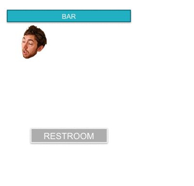

What is a Monte Carlo Simulation (Part 1)
Jan 17, 2018 - PythonOne of the most powerful techniques in any data scientists tool belt is the Monte Carlo Simulation. It's super flexible and extremely powerful, since it can be applied to almost any situation if the problem can be stated probabilistically. However, I've found that for many folks the concept of using Monte Carlo is obscured by a fundamental misunderstanding of what it is. To address that, I've decided to put together a series of small projects that demonstrate the power of Monte Carlo methodology in a few different fields. In this first section, we'll start out just by discussing what is a Monte Carlo simulation in the first place.
To get started, let's take a look at a simple example. Let's imagine there's a very, very drunk guy at a bar. He decides that he needs to use the restroom. He stands up and immediately proclaims that he's "not that drunk... like, (hic) come'on man (hic) I'm finnnennene." He has no control over his limbs at this point and in order to walk he just staggers randomly in any direction. This idea is sometimes called the "drunkard's walk" and we can look at it by using a Monte Carlo approach. Take a look at a possible path in the image below, and then we'll talk about why this counts as a Monte Carlo.
 A Monte Carlo simulation means that we're using a set of dice to decide how our actor behaves. In this case, we can roll a dice to decide what angle our inebriated friend is going to step. Then we take 1-step forward based on whatever the dice said. Then we do it again. And again. And again. Until we reach some sort of stopping condition.
At this point, you may be thinking, "Great, so we can essentially map randomness. La-dee-da." To that, I say... EXACTLY. Let's talk about how this is a great tool. What if you wanted to know the odds that your sauced compatriot will actually make it to the bathroom? The traditional way to do that would be to calculate what percentage of the room is covered by the bathroom, and then take a ratio of bathroom to unbathroom. This would give you an idea of how much of the room counts as a victory - and thus some first-level approximation of his chance of success. However, this is pretty shaky, since there may be tables in the way or he may only be able to take 12 total steps, or maybe the door to the restroom is down a hallway, so you have to be able to account for all of that. When something gets this complicated, it becomes very challenging to directly calculate the odds. However, if we can simulate each step, and just make sure that we know the rules (e.g. can't walk into tables or walls, must go down hallway to get to bathroom, etc), we can run many simulations and see how often he actually makes it to the bathroom. Now this seemingly infinitely complex problem just comes down to, "can we take random steps and can we make sure our simulation doesn't magically teleport through walls." Both of those are much easier problems to solve. Since we can solve those problems, we can then run lots of simulations to see what happens.
In this example, we could setup the rules of our game as follows:
- 1. Every time we take a step, we roll a dice to see what direction we go in.
- 2. If the step places our intoxicated bro inside a table or through a wall, we stop the simulation and call it a "failure to make it to the bathroom."
- 3. If the step places our blitzed comrade through the bathroom door, we stop the simulation and call it a success.
- 4. If this is his 50th step since leaving the bar, we'll stop there because we don't believe he could realistically take that many steps in a row. This will constitute a failure.
Then we run the game 10,000 times and see how many times Drunk Joe makes it to the bathroom. If he makes it 200 times, we'd say he has a 200/10,000 = 2% chance of making it to the bathroom. If he makes it 2000 times, we'd say there's a 20% chance. By following the rules of our game, we're able to figure out the probability! Also note, that if you change the rules of the game, even slightly, you can determine different probabilities. For instance, what if we change rule 2 to allow the drunk to bounce off of tables? That would give us a totally new set of probabilities, with very minimal work on our part! We could us all the same simulation machinery and just add a rule that says, "if he hits a table, make him go back one spot." That's the only change necessary to completely change how our blasted imbecile behaves.
That's the essence of a Monte Carlo approach. If you can define the rules of the game, even if it's a super complicated game, then you can do lots and lots of tries and see what sort of trends appear. Those trends can be viewed as a series of results that we can do statistical analysis on to extract things like the average behavior, behavior consistency, outlier behaviors, or even do hypothesis testing! Let's talk about some notable examples from the real world:
Election prediction
While their total method isn't released, the statistically driven site fivethirtyeight uses Monte Carlo to estimate election odds. To do this, they take lots of polls and aggregate them together. Them for each state (or district), they develop a set of rules for randomly rolling an election result for that state. So in a presidential election, if the average poll says 53% Democrat, 47% Republican, and there's a standard deviation of 5%, they will randomly draw from a Normal distribution with a mean of 53% and a width of 5%. If the state is above 50%, it counts towards the democrat, if it's below 50% it counts toward the Republican. If you do this for all 50 states, you'd have one "full" election simulated and can see who wins. Then, to make the whole thing more statistically sound, you could simulated hundreds of thousands of simulations, and see which candidate wins and how often. This is how fivethirtyeight, at least at a high level, does their prediction making.Sports results
Let me shamelessly plug my own little toy example here: Baseball Simulator. This method reads the data about each pitcher and batter, and then simulates, batter by batter, what the result will look like. You can see the "About" page there to read in more detail about how it works. If you run 10000+ games with two teams input, it will converge on which team is actually the better team (based on their stats alone). It does a pretty good job and is fairly fun to play around with.Besides the fact that mine is outlandishly amateur looking, this is a pretty standard product in the world of sports betting. To make odds well as a bookie, you have to be very concise about how much risk you're willing to take. If you know that two teams are very equal overall, you'd be foolish to give long odds to one of the teams as you'd certainly lose money. To make the odds, agencies do a lot of simulating games. You'll see things like ELO Scores or "Team Strength" ratings across the internet. These are methods of calculating "how good" a team is. If you have an ELO score for each team and an understanding of how "consistent" the team is, you can make a set of rules for simulating games. Then you can run lots of simulations and see what the likelihood of each team winning is.
Weather prediction
Modeling the weather is HARD. Like, really really hard. There are two ways you can go about it. 1) You can do a fluid dynamics simulation where you track the whole atmosphere really accurately, accounting for every cubic inch of sky and water. That could work if you had unlimited time and resources. Or 2) you can track the "ballpark" behavior of a bunch of big sections of the atmosphere and then simulate it thousands of times. Then, if it rains in 600 out of your 10000 simulations, you label it as a 6% chance of rain. Most weather systems use the latter, with some really neat optimizations.All this is to say that there are tons of REALLY cool applications of Monte Carlo techniques that are throughout our daily lives. It's an extremely underrated technique that doesn't get nearly as much love as it deserves. Monte Carlo's also don't have to have the EXACT same rules at every step. Instead things like "state driven probabilities" are a possible. We'll see more about that in a separate blog. That brings me to a bigger point, to help the community learn a bit more about Monte Carlo, I'm going to put together some detailed tutorials on how we can use Monte Carlo techniques with Python (here we'll look into state driven probabilities), how we can apply them to poker, and how scientists are using Monte Carlo techniques in Physics. Stay tuned over the next few weeks!